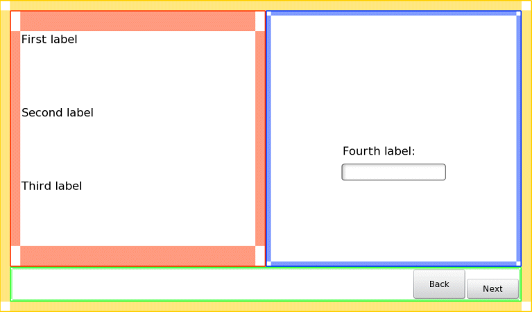

| Package | qnx.ui.core |
| Class | public class Container |
| Inheritance | Container |
Container class is the basic "container" that contains the interface components of an application.
It handles the positioning, size, and layout of its children.
Containers are useful for segmenting the screen into compartments, and for organizing the layout and flow of all components within
a compartment.
The following example describes a typical layout scenario using containers:

The layout above uses four containers, where the border and margin of each container is highlighted in a unique colour. This is done
by setting the container's debugColor property to a unique color code. The debugColor property is useful
for visualizing the bounds of each container while you develop your application. This allows you to tweak the details of the layout.
The main container, myMain (yellow), encompasses the entire stage and contains the three subcontainers: mySub, mySubRight,
and mySubBottom. The
following code listing shows the myMain container:
myMain = new Container(); myMain.margins = Vector.<Number>([20,20,20,20]); myMain.flow = ContainerFlow.HORIZONTAL; myMain.debugColor = 0xFFCC00; addChild(myMain);
The
flow
indicates the layout orientation, or direction of all subcomponents (children) within a parent container. The myMain container's flow property is set to
ContainerFlow.HORIZONTAL meaning that the container's children (which may also be containers)
will appear horizontally opposed, or side by side within the container. The margins property takes a Vector of four numbers indicating, in order, margins
for the the left, top,
right, and bottom edges of the container. So Vector.<Number>([20,40,20,40]), would indicate top and bottom margins of 40 pixels, and left and right margins
of 20 pixels. A component will only overlap a margin if the container runs out of space. For the sake of the sample, the margin values are specified using literals.
The code for the mySub (red) container, which makes up the left side of the screen, is listed below:
// create subcontainer on left side of the screen // mySub = new Container(); mySub.margins = Vector.<Number>([20,40,20,40]); mySub.debugColor = 0xFF3300; mySub.size = 50; mySub.sizeUnit = SizeUnit.PERCENT; mySub.flow = ContainerFlow.VERTICAL; mySub.align = ContainerAlign.NEAR; mySub.padding = 10;
The mySub container uses a vertical flow (ContainerFlow.VERTICAL) meaning that all components within this
container will appear vertically opposed, or one on top of another. It's also important to note that components will appear in the order
in which they are added to a container, such that the top-most component in the mySub container will be the component that is first added to the container.
This is always true unless a component is docked, which is described later.
The size and sizeUnit properties determine the size of the subcontainer, or rather, the amount of space the
subcontainer will take up within the parent container. In this case, size is set to 50 and sizeUnit is set to SizeUnit.PERCENT
indicating that mySub will take up 50% of the main container. The default value of sizeUnit is pixels.
The align property determines the position, or alignment, of each subcomponent in the direction opposite to the flow of the container. In a container with a vertical
flow, this specifies the horizontal position (or x coordinate) of the subcomponent, relative to the left edge of the container. Conversely, in a container with a horizontal flow, the alignment specifies the vertical
position (or y coordinate) of the component relative to the top edge of the container. The align property has three values: ContainerAlign.NEAR,
ContainerAlign.MID,and ContainerAlign.FAR, where each value represents a position relative to the initial edge of the container. ContainerAlign.NEAR
is the closest, ContainerAlign.FAR is the furthest. ContainerAlign.MID is the default.
The padding property sets the amount of space (in pixels) between each subcomponent.
The sub container, mySubRight on the right-side of the screen is listed below:
mySubRight = new Container(); mySubRight.margins = Vector.<Number>([10,10,10,10]); mySubRight.size = 50; mySubRight.debugColor = 0x0033FF; mySubRight.sizeUnit = SizeUnit.PERCENT; mySubRight.flow = ContainerFlow.VERTICAL; mySubRight.align = ContainerAlign.MID; mySubRight.padding = 10;
The final container, mySubBottom (green), is listed below:
// create subcontainer as the bottom frame // mySubBottom = new Container(); mySubBottom.margins = Vector.<Number>([5,5,5,5]); mySubBottom.debugColor = 0x33FF33; mySubBottom.size = 9; mySubBottom.sizeUnit = SizeUnit.PERCENT; mySubBottom.flow = ContainerFlow.HORIZONTAL; mySubBottom.align = ContainerAlign.FAR; mySubBottom.containment = Containment.DOCK_BOTTOM;
This container is docked to the bottom of the stage by setting the containment property to Containment.DOCK_BOTTOM. Docked children are
handled first, leaving the remainder of the container for the rest of the children. You can dock a subcomponent to any of the
four edges of a container, you can set a container to reside in the background of the stage (Containment.BACKGROUND), or you can specify that the component will not
repositioned by the parent container (Containment.UNCONTAINED).
A container can set the size of each subcomponent in the direction of the flow, only if the subcomponent implements the IContainable interface and only if IContainable.size is not 0. Otherwise, the subcomponents dimensions are not changed during a layout operation.
A container can set the size of a subcomponent in the direction opposite
the container flow (height in a horizontal container, width in a vertical container) only if the subcomponent implements IContainable and IContainable.sizeMode is set
to SizeMode.BOTH. When this property is set, the subcomponent will fill the remaining container space (in the direction opposite to the flow of the container) and the
container's align setting will be ignored.
The Back button uses the SizeMode property to fill out the opposite direction in the bottom container. In other words, after a layout call, the Back
button will expand vertically (note that the container uses a horizontal flow) to fill the space in the bottom container:
leftButton = new LabelButton(); leftButton.label = "Back"; leftButton.size = 100; leftButton.sizeUnit = SizeUnit.PIXELS; leftButton.sizeMode = SizeMode.BOTH;
Note that you must specify a size for the component (using the size property) otherwise the component will not resize when a layout call occurs. For the sake of the
example, the Next button does not specify the SizeMode property.
rightButton = new LabelButton(); rightButton.label = "Next"; rightButton.size = 100;
The Back and Next buttons are positioned at the far bottom-right side of the container. This is accomplished by setting the
align property to ContainerAlign.FAR but also by adding a spacer as the first subcomponent in the container. By default, the spacer is set to take up
100 percent of the container, which pushes the other two components to the far right of the container. Notice that a second spacer is added to provide spacing between the buttons. This
could also have been accomplished by using the padding property.
mySubBottom.addChild(new Spacer()); mySubBottom.addChild(leftButton); mySubBottom.addChild(new Spacer(3,SizeUnit.PIXELS)); mySubBottom.addChild(rightButton);
Finally, and perhaps most importantly, we call the myMain container's setSize method, which sets the size of the main container:
//call setSize // myMain.setSize(stage.stageWidth, stage.stageHeight);
This in turn calls the layout() function which adjusts the
layout of the subcomponents according to the properties that are defined by each parent container. It's important to call this method only after each container and each subcomponent is
defined. Otherwise, the call will have no effect.
The complete code for this layout is listed in the examples section below.
See also
| Property | Defined By | ||
|---|---|---|---|
| align : String
Specifies the align, with which contained and non-resizable children are positioned. | Container | ||
 | containment : String
Gets or sets how a component is contained within a parent container. | UIComponent | |
| flow : String
Specifies the flow direction, with which any contained children are positioned. | Container | ||
| margins : Vector.<Number>
Gets or sets the internal margins for the container (the space just inside
the border of the container). | Container | ||
| padding : Number
Specifies the internal padding in pixels for the container (the space
between contained children of the container). | Container | ||
| size : Number
Gets or sets the size for this component (as a percentage of the
container's size, or in pixels). | UIComponent | |
| sizeMode : String
Gets or sets the size mode for this component. | UIComponent | |
| sizeUnit : String
Gets or sets the unit of measure for the size property. | UIComponent | |
| Method | Defined By | ||
|---|---|---|---|
Container(s:Number = 100, su:String = percent)
Constructs a Container instance given a size and size unit. | Container | ||
| destroy():void
Call this method when you want to have your object collected by the garbage collector. | UIComponent | |
layout():void
Repositions the children of the container according to the flow and align settings
of the container, and the containment and sizing attributes (if present) of the children. | Container | ||
| setPosition(x:Number, y:Number):void
Sets the x and y position of the component. | UIComponent | |
setSize(width:Number, height:Number):void [override]
Called by the parent (other containers or the outer most parent) to
set the size of the container. | Container | ||
| align | property |
public var align:StringSpecifies the align, with which contained and non-resizable children are positioned.
The align attribute is used to determine the position of the childen in the
direction opposite to the flow of the container, with near implying
upper or left-most, and far implying lower or right-most. This applies only
to children which do not implement the IContainable interface or those which
specify a 0 size.
ContainerAlign.NEARContainerAlign.MIDContainerAlign.FAR The default value is ContainerAlign.MID.
See also
| flow | property |
public var flow:StringSpecifies the flow direction, with which any contained children are positioned.
Possible values are:
ContainerFlow.VERTICALContainerFlow.HORIZONTAL The default value is ContainerFlow.VERTICAL.
See also
| margins | property |
margins:Vector.<Number>
Gets or sets the internal margins for the container (the space just inside
the border of the container). The m argument is represented as a
vector of 4 numbers: the left, top,
right and bottom edges respectively.
The default value is [0, 0, 0, 0].
public function get margins():Vector.<Number> public function set margins(value:Vector.<Number>):voidSee also
| padding | property |
padding:NumberSpecifies the internal padding in pixels for the container (the space between contained children of the container).
The default value is 8.
public function get padding():Number public function set padding(value:Number):voidSee also
| Container | () | Constructor |
public function Container(s:Number = 100, su:String = percent)
Constructs a Container instance given a size and size unit.
s:Number (default = 100)Number representing the size of the container. The default value is 100 (the default unit is percent).
| |
su:String (default = percent)String representing the unit. Can be one of SizeUnit.PERCENT or SizeUnit.PIXELS.
The default value is SizeUnit.PERCENT.
|
See also
| layout | () | method |
public function layout():voidRepositions the children of the container according to the flow and align settings of the container, and the containment and sizing attributes (if present) of the children.
Invisible children are not positioned by a container.
A child is considered docked if it implements the IContainable interface and its
containment property is set to Containment.DOCK_LEFT, Containment.DOCK_TOP,
Containment.DOCK_RIGHT or Containment.DOCK_BOTTOM. Children which implement
IContainable and specify a containment of Containment.UNCONTAINED
will be ignored by the container. Children which specify a containment of
Containment.BACKGROUND will be sized to fill the entire area of the container.
A child is considered resizable if it implements the IContainable interface and its
size property is greater than 0.
Containers will position docked children first around the edges of the container. They will
then will position undocked children in the remaining area of the container. Undocked
children which are resizable will be positioned and sized based on their size
(and sizeUnit) property in the direction of the container flow, and will
fill the remaining space in the direction opposite the flow.
Undocked children which are not resizable will be positioned based on their width and
height properties in the direction of the container flow, and will be aligned in the
direction opposite the container flow based on the container's align property.
See also
| setSize | () | method |
override public function setSize(width:Number, height:Number):voidCalled by the parent (other containers or the outer most parent) to set the size of the container.
The container will invoke layout automatically in response to this.
Parameters
width:Number — The new width (in pixels) for the Container component.
| |
height:Number — The new height (in pixels) for the Container component.
|
See also
package
{
import flash.display.Sprite;
import flash.text.TextFieldAutoSize;
import flash.text.TextFormat;
import qnx.ui.buttons.LabelButton;
import qnx.ui.core.Container;
import qnx.ui.core.ContainerAlign;
import qnx.ui.core.ContainerFlow;
import qnx.ui.core.Containment;
import qnx.ui.core.SizeMode;
import qnx.ui.core.SizeUnit;
import qnx.ui.core.Spacer;
import qnx.ui.core.UIComponent;
import qnx.ui.text.Label;
import qnx.ui.text.TextInput;
[SWF(height="600", width="1024", frameRate="30", backgroundColor="#FFFFFF")]
// A simple container layout example //
public class containerTest extends Sprite
{
//the containers //
private var myMain:Container;
private var mySub:Container;
private var mySubRight:Container;
private var mySubBottom:Container;
//the left-side of the screen labels //
private var firstLabel:Label;
private var secondLabel:Label;
private var thirdLabel:Label;
private var fourthLabel:Label;
//text input for second sub container //
private var firstInput:TextInput;
//the back and next buttons //
private var leftButton:LabelButton;
private var rightButton:LabelButton;
public function containerTest()
{
// create main container //
myMain = new Container();
myMain.margins = Vector.<Number>([20,20,20,20]);
myMain.flow = ContainerFlow.HORIZONTAL;
myMain.debugColor = 0xFFCC00;
addChild(myMain);
// create subcontainer on left side of the screen //
mySub = new Container();
mySub.margins = Vector.<Number>([20,40,20,40]);
mySub.size = 50;
mySub.debugColor = 0xFF3300;
mySub.sizeUnit = SizeUnit.PERCENT;
mySub.flow = ContainerFlow.VERTICAL;
mySub.align = ContainerAlign.NEAR;
mySub.padding = 10;
// create second subcontainer on left side of the screen //
mySubRight = new Container();
mySubRight.margins = Vector.<Number>([10,10,10,10]);
mySubRight.size = 50;
mySubRight.debugColor = 0x0033FF;
mySubRight.sizeUnit = SizeUnit.PERCENT;
mySubRight.flow = ContainerFlow.VERTICAL;
mySubRight.align = ContainerAlign.MID;
mySubRight.padding = 10;
// create subcontainer as the bottom frame //
mySubBottom = new Container();
mySubBottom.margins = Vector.<Number>([5,5,5,5]);
mySubBottom.debugColor = 0x33FF33;
mySubBottom.size = 12;
mySubBottom.sizeUnit = SizeUnit.PERCENT;
mySubBottom.flow = ContainerFlow.HORIZONTAL;
mySubBottom.align = ContainerAlign.FAR;
mySubBottom.containment = Containment.DOCK_BOTTOM;
// create and add UI components to the left container//
var labelFormat:TextFormat = new TextFormat();
labelFormat = new TextFormat();
labelFormat.size = 22;
firstLabel = new Label();
firstLabel.format = labelFormat;
firstLabel.text = "First label";
firstLabel.size=50;
firstLabel.sizeUnit = SizeUnit.PERCENT;
firstLabel.autoSize = TextFieldAutoSize.LEFT;
mySub.addChild(firstLabel);
secondLabel = new Label();
secondLabel.format = labelFormat;
secondLabel.text = "Second label";
secondLabel.size=50;
secondLabel.sizeUnit = SizeUnit.PERCENT;
secondLabel.autoSize = TextFieldAutoSize.LEFT;
mySub.addChild(secondLabel);
thirdLabel = new Label();
thirdLabel.format = labelFormat;
thirdLabel.text = "Third label";
thirdLabel.size=50;
thirdLabel.sizeUnit = SizeUnit.PERCENT;
thirdLabel.autoSize = TextFieldAutoSize.LEFT;
mySub.addChild(thirdLabel);
// create and add UI components for right side //
firstInput = new TextInput;
firstInput.width = 200;
fourthLabel = new Label();
fourthLabel.format = labelFormat;
fourthLabel.text = "Fourth label:";
fourthLabel.width = 200;
fourthLabel.size=30;
fourthLabel.sizeUnit = SizeUnit.PIXELS;
mySub.addChild(thirdLabel);
mySubRight.addChild(new Spacer(60));
mySubRight.addChild(fourthLabel);
mySubRight.addChild(firstInput);
// create and add back and next buttons //
leftButton = new LabelButton();
leftButton.label = "Back";
leftButton.size = 100;
leftButton.sizeUnit = SizeUnit.PIXELS;
leftButton.sizeMode = SizeMode.BOTH;
rightButton = new LabelButton();
rightButton.label = "Next";
rightButton.size = 100;
// add spacer then button then spacer then button //
mySubBottom.addChild(new Spacer());
mySubBottom.addChild(leftButton);
mySubBottom.addChild(new Spacer(3,SizeUnit.PIXELS));
mySubBottom.addChild(rightButton);
// add subcontainers to main container //
myMain.addChild(mySub);
myMain.addChild(mySubRight);
myMain.addChild(mySubBottom);
// call setSize //
myMain.setSize(stage.stageWidth, stage.stageHeight);
}
}
}
 Hide Inherited Public Properties
Hide Inherited Public Properties Show Inherited Public Properties
Show Inherited Public Properties